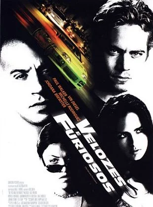
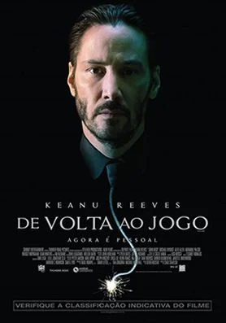
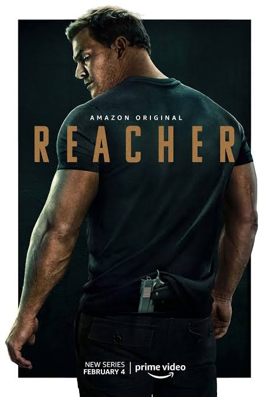

Velozes & Furiosos, O policial disfarçado Brian O'Conner infiltra-se em uma gangue de corridas de rua em Los Angeles liderada por Dominic Toretto. O grupo é suspeito de roubar equipamentos eletrônicos de alto valor em movimento. Brian precisa provar sua lealdade, mas acaba dividido ao se envolver com o estilo de vida do grupo e se apaixonar pela irmã de Dom, Mia.

O policial disfarçado Brian O'Conner infiltra-se no submundo das corridas de rua em Los Angeles. Ele precisa descobrir se o líder Dominic Toretto é o autor de roubos a caminhões em alta velocidade, mas acaba dividido entre sua missão e a lealdade à nova "família".

o jovem rebelde Sean Boswell é enviado para morar com o pai no Japão para escapar da prisão após um acidente de corrida ilegal nos EUA. Lá, ele descobre o perigoso mundo do drift, enfrenta o "Rei do Drift" ligado à Yakuza e faz amizade com Han.

um ex-assassino de aluguel aposentado (Keanu Reeves) vive o luto pela morte da esposa. Quando criminosos invadem sua casa, roubam seu carro e matam o filhote de cachorro que ela lhe deixara, ele retorna ao submundo do crime para buscar vingança.

acompanha o ex-policial militar Jack Reacher (Alan Ritchson), que viaja pelos Estados Unidos como investigador freelancer. Ao chegar a uma cidade pequena, ele é preso por um crime que não cometeu e descobre uma grande rede de corrupção e conspiração.
